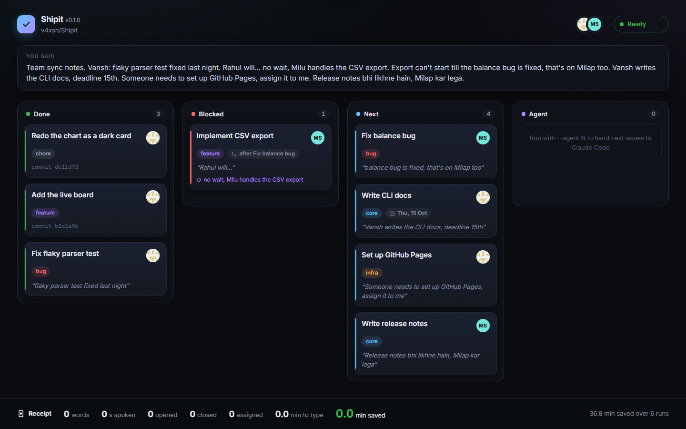
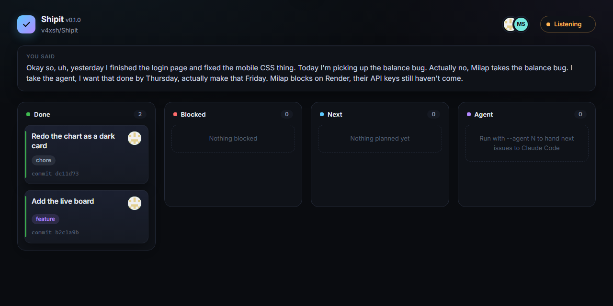
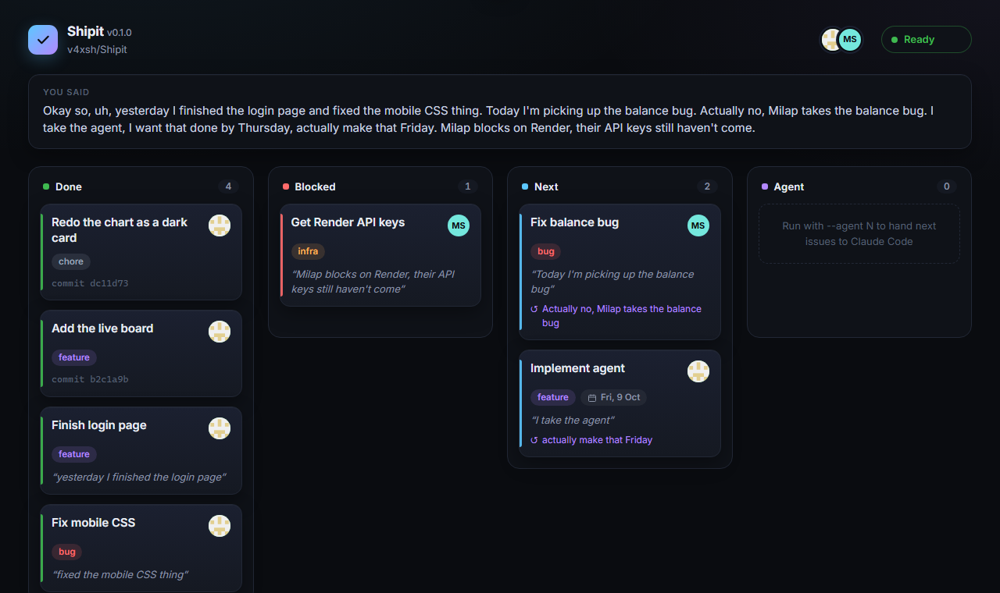
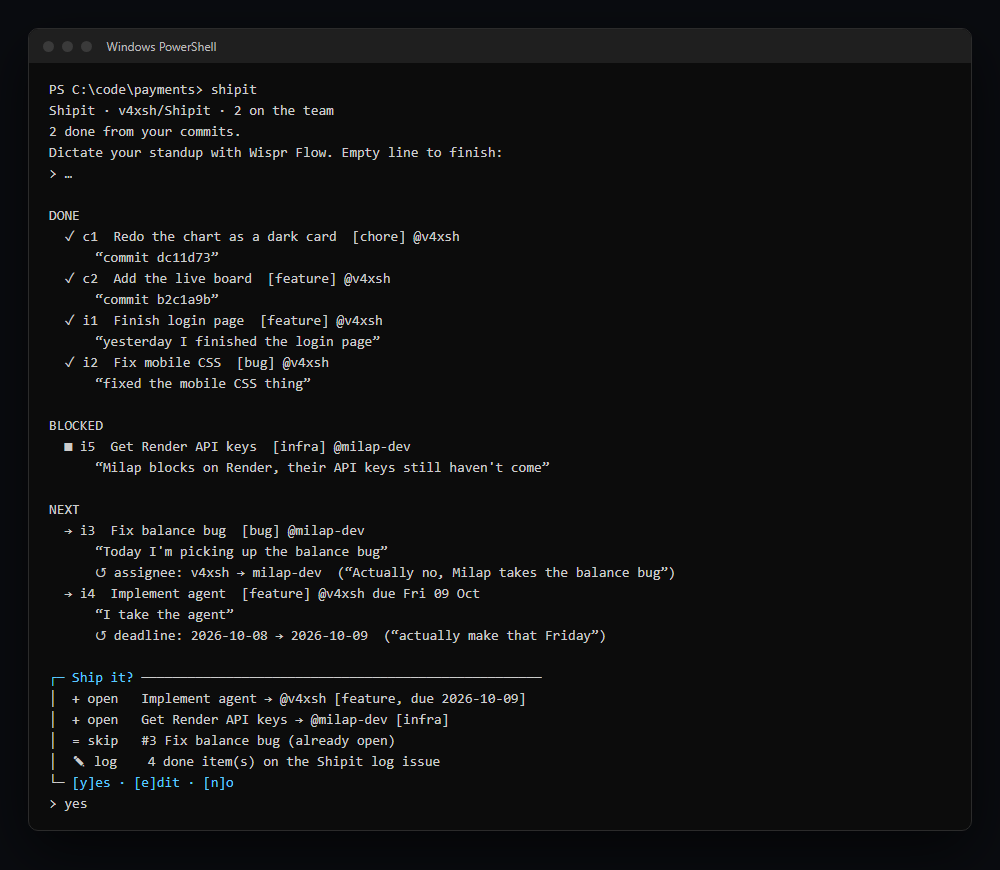
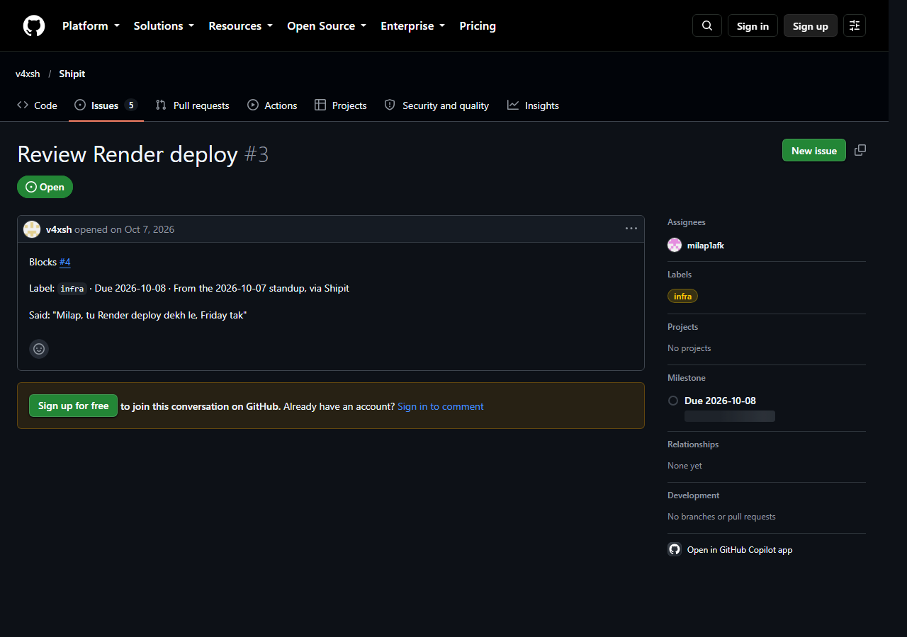
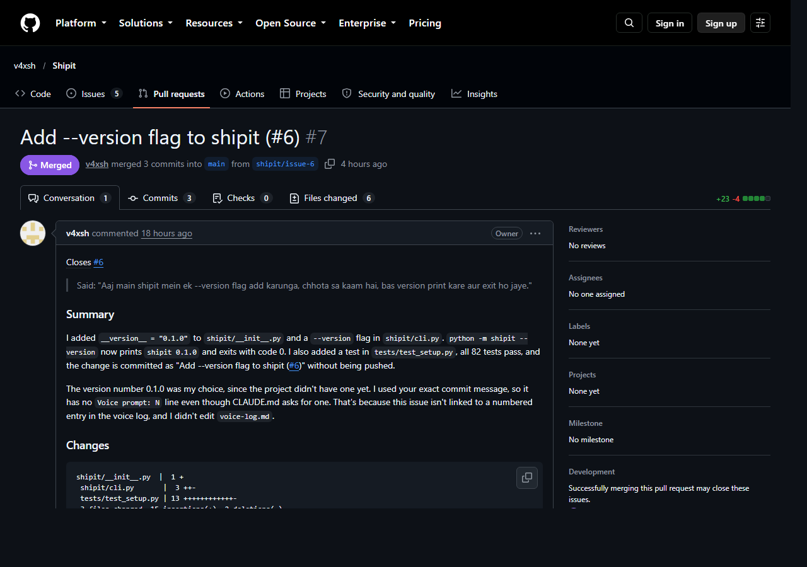
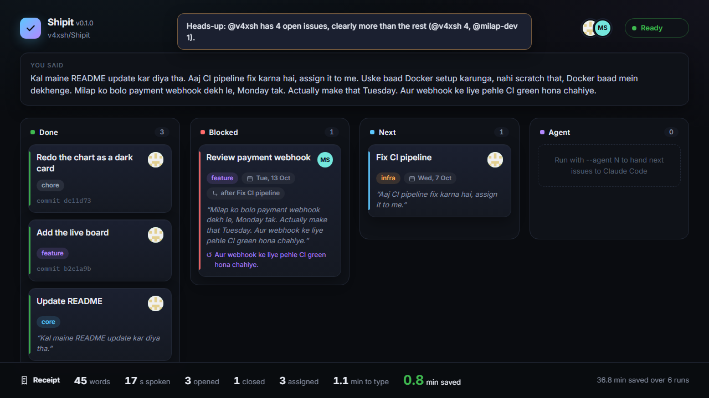
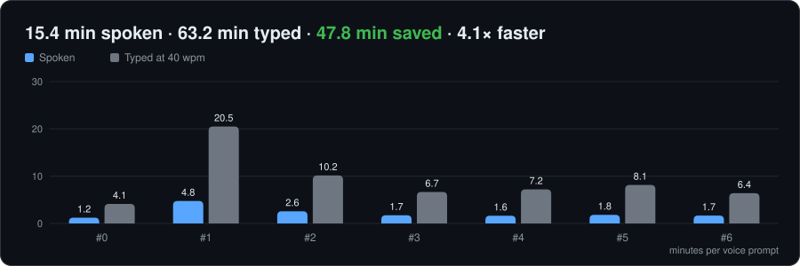

Say it. It's tracked.
It's started.
Shipit is a command-line tool for developers. Instead of typing a standup, you talk, and it ships: GitHub issues with labels, owners and deadlines, a live board, and Claude Code agents that turn your next issues into pull requests.

60-second install
Python 3.10+, the GitHub CLI, and a free Groq key. No other dependencies.
# 1. install (15 s) pip install git+https://github.com/v4xsh/Shipit # 2. sign in to GitHub once (20 s) gh auth login # 3. in your repo: add the Groq key to a gitignored .env (10 s) echo GROQ_API_KEY=gsk_your_key >> .env # 4. watch the demo board, no keys or network needed (15 s) shipit --replay # then for real: dictate your standup with Wispr Flow, empty line to finish shipit # "shipit" not found? pip's Scripts folder isn't on PATH: use python -m shipit
How it works
Speak
Run shipit in any Git repo. Your commits since the
last run are already drafted as done. Dictate the rest with Wispr Flow, in English or Hinglish, messy is
fine: “Milap takes the balance bug… actually make that Friday… scratch that.”

Watch the board
Groq turns it into done, blocked and next items. Cards slide in quoting your words, with label, owner, deadline and dependencies. Corrections play out: scratched cards strike and fade, reassigned avatars flip, changed deadlines pulse.

Say yes
A confirm card in the terminal: yes, edit or no. Nothing touches GitHub before yes. Say an edit (“docs wala Milap ko de do”) and the board re-plays it.

It's on GitHub
One issue per item, with labels, assignee, a due-date
milestone and Blocked by #n links, never duplicated. Done items close their issue. Every
body ends with what you actually said.

Agents start
--agent 1 hands your next issue to Claude Code
in its own worktree. Shipit runs the tests itself, then pushes and opens a PR that closes the issue.

Get the receipt
Words, issues opened and closed, minutes saved against typing at 40 wpm, and a running total. If someone is carrying clearly more, it says so.

Built by voice
Shipit itself was dictated, prompt by prompt. See every prompt, word for word, and the minutes it saved →
